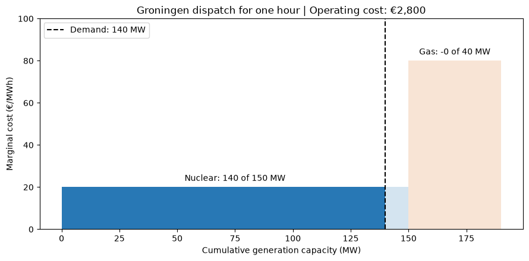

Introduction to pypsa: a simple dispatch problem#
PyPSA stands for Python for Power System Analysis.
PyPSA is an open source Python package for simulating and optimising modern energy systems that include features such as
conventional generators with unit commitment (ramp-up, ramp-down, start-up, shut-down),
time-varying wind and solar generation,
energy storage with efficiency losses and inflow/spillage for hydroelectricity
coupling to other energy sectors (electricity, transport, heat, industry),
conversion between energy carriers (e.g. electricity to hydrogen),
transmission networks (AC, DC, other fuels)
PyPSA can be used for a variety of problem types (e.g. electricity market modelling, long-term investment planning, transmission network expansion planning), and is designed to scale well with large networks and long time series.
Dependencies#
pandasfor storing data about network components and time seriesnumpyandscipyfor linear algebra and sparse matrix calculationsmatplotlibandcartopyfor plotting on a mapnetworkxfor network calculationslinopyfor handling optimisation problems
Basic components#
Component |
Description |
|---|---|
Container for all components. |
|
Node where components attach. |
|
Energy carrier or technology (e.g. electricity, hydrogen, gas, coal, oil, biomass, on-/offshore wind, solar). Can track properties such as specific carbon dioxide emissions or nice names and colors for plots. |
|
Energy consumer (e.g. electricity demand). |
|
Generator (e.g. power plant, wind turbine, PV panel). |
|
Power distribution and transmission lines (overhead and cables). |
|
Links connect two buses with controllable energy flow, direction-control and losses. They can be used to model:
|
|
Storage with fixed nominal energy-to-power ratio. |
|
Storage with separately extendable energy capacity. |
|
Constraints affecting many components at once, such as emission limits. |
note: Links in the table lead to documentation for each component.#
Getting started#
Simple electricity market problem#
Suppose we want to meet electricity demand in Groningen for one hour. We represent the city as a single bus, called Groningen, and label the one-hour time step now. This is a simplified teaching example: both generators and the consumer are connected to the same bus, so we
do not need to model transmission between locations.
Two generators are available:
Generator |
Maximum output (MW) |
Marginal cost (€/MWh) |
|---|---|---|
|
40 |
80 |
|
150 |
20 |
The load, called Consumer, requires 140 MW throughout the hour. The generators are already built, so their capacities are fixed.
What we need to decide is their dispatch: how much power each generator actually produces.
The capacity in \([MW]\) tells us how much power a generator can supply. The marginal cost in €/MWh tells us how much it costs to produce one additional MWh. To find the least-cost dispatch, we need both pieces of information: the cheaper generator may have a limit on how much demand it can cover.
Before you run the model#
Which generator would you use first, and why?
Can that generator meet all 140 MW of demand on its own?
How much should each generator produce? What would the total operating cost be for the hour?
Optional: If demand increased to 160 MW, how would your dispatch change?
Make a prediction before running PyPSA. The next section shows how the model turns these inputs into an objective and two constraints: each generator must stay within its capacity, and together they must supply exactly the power the consumer needs.
Building a basic network#
import pypsa # importing the PyPSA library for power system analysis
---------------------------------------------------------------------------
ModuleNotFoundError Traceback (most recent call last)
Cell In[1], line 1
----> 1 import pypsa # importing the PyPSA library for power system analysis
ModuleNotFoundError: No module named 'pypsa'
n = pypsa.Network()
n.set_snapshots(["now"])
n.snapshot_weightings.loc["now", "objective"] = 1.0 # One hour
c:\miniforge3\envs\pypsa-clean\Lib\site-packages\pypsa\network\io.py:2079: FutureWarning: pandas infers the `str` dtype for string data since its version 3.0. PyPSA still converts it back to numpy object dtype on import, but will keep it from PyPSA 2.0 on. Set `pypsa.options.api.legacy_string_dtype` explicitly to suppress this warning.
new_static = _coerce_string_dtypes(new_static)
Check that you created your Network#
n
Empty PyPSA Network 'Unnamed Network'
-------------------------------
Components: none
Snapshots: 1
Add a Bus#
The next essential element in the model is the bus. Buses act as the key connection points in the system: all loads, generators, and lines are linked to them. They ensure that power flowing into and out of the node is balanced, following Kirchhoff’s Current Law.
To include components in the network n , we use the n.add() method. The first argument specifies the type of component, the second assigns its name, and any additional properties are passed as keyword arguments. We can now apply this method to create one bus per country in our network1:
Add the carrier. In this case, the carrer is a grid that transport electricity in AC.
n.add("Carrier", "AC")
n.add("Bus", "Groningen", v_nom=110, carrier="AC")
Each class of components have stored in a pandas.DataFrame a data descriptor. e.g. for all static buses is stored in n.buses
n.buses
| v_nom | type | x | y | carrier | unit | location | v_mag_pu_set | v_mag_pu_min | v_mag_pu_max | control | generator | sub_network | |
|---|---|---|---|---|---|---|---|---|---|---|---|---|---|
| name | |||||||||||||
| Groningen | 110.0 | 0.0 | 0.0 | AC | 1.0 | 0.0 | inf | PQ |
As you can see, the buses now contain many additional attributes beyond the few we defined when creating them. Most of these fields are automatically populated with default values. You can check the description of each field—along with its default setting and whether it is required, optional, or an output—by referring to the Bus component documentation in PyPSA. The same type of information is available for all other components as well.
e.g.: https://docs.pypsa.org/latest/user-guide/components/buses/
The n.add() function lets you add any component to the network object n:
n.add(
"Generator",
"gas",
bus="Groningen",
p_nom_extendable=False,
p_nom=40, # MW
marginal_cost=80 # €/MWh
)
n.add(
"Generator",
"nuclear",
bus="Groningen",
p_nom_extendable=False,
p_nom=150, # MW
marginal_cost=20 # €/MWh
)
n.add() also allows you to add multiple components at once. For instance, multiple carriers for the fuels with information on specific carbon dioxide emissions, a name to identify the carrier, and colors to differentiate them while plotting. To this aim the function takes the component name as the first argument and then a list of component names and then optional arguments for the parameters. Here, scalar values, lists, dictionary or pandas.Series are allowed. The latter two needs keys or indices with the component names.
As a result, the n.generators DataFrame looks like this:
n.generators
| bus | control | type | p_nom | p_nom_mod | p_nom_extendable | p_nom_min | p_nom_max | p_nom_set | p_min_pu | ... | min_down_time | up_time_before | down_time_before | ramp_limit_up | ramp_limit_down | ramp_limit_start_up | ramp_limit_shut_down | weight | p_nom_opt | capital_cost_piecewise_opt | |
|---|---|---|---|---|---|---|---|---|---|---|---|---|---|---|---|---|---|---|---|---|---|
| name | |||||||||||||||||||||
| gas | Groningen | PQ | 40.0 | 0.0 | False | 0.0 | inf | NaN | 0.0 | ... | 0 | 1 | 0 | NaN | NaN | NaN | NaN | 1.0 | 0.0 | 0.0 | |
| nuclear | Groningen | PQ | 150.0 | 0.0 | False | 0.0 | inf | NaN | 0.0 | ... | 0 | 1 | 0 | NaN | NaN | NaN | NaN | 1.0 | 0.0 | 0.0 |
2 rows × 47 columns
Next, we’re going to add the electricity demand.
A positive value for p_set means consumption of power from the bus.
n.add(
"Load",
"energy_users_consumption",
bus="Groningen",
p_set=140, # [MW] We start with a constant demand of 140 MW, but clear all outputs and run it again changing p_set to 160 MW.
)
n.loads
| bus | carrier | type | p_set | q_set | sign | active | |
|---|---|---|---|---|---|---|---|
| name | |||||||
| energy_users_consumption | Groningen | 140.0 | 0.0 | -1.0 | True |
Optimisation#
How PyPSA formulates the dispatch problem#
In PyPSA, we describe the energy system using components such as generators, loads, and buses. PyPSA uses the data stored in these components to build the optimisation problem. For example, a generator’s capacity limits how much power it can produce, while its marginal cost determines how much the model pays for each MWh it generates. A load specifies demand, and the bus is the point where supply and demand must balance.
In this example, Groningen is represented by one bus. All generators are already built, so their capacities are fixed. The question is: How much should each generator produce at each time step to meet Groningen’s demand at the lowest total operating cost?
Decision variable and inputs#
Symbol |
Meaning |
Unit |
|---|---|---|
\(g_{s,t}\) |
Decision variable: the power produced by generator \(s\) at time step \(t\). |
MW |
\(c_s(t)\) |
Marginal cost of generator \(s\) at time step \(t\): the cost of producing one additional MWh in that interval. |
€/MWh |
\(G_s\) |
Rated power capacity of generator \(s\). |
MW |
\(D_t\) |
Groningen’s electricity demand at time step \(t\). |
MW |
\(\Delta t_t\) |
Duration represented by time step \(t\). |
h |
What the objective and constraints mean#
The objective adds up the cost of generation across all generators and time steps. Multiplying power \(g_{s,t}\) by the duration \(\Delta t_t\) gives the energy produced in MWh. Multiplying that energy by the marginal cost \(c_s(t)\) gives the cost in euros for that interval.
For example, suppose a gas generator produces 10 MW for one hour. If its marginal cost is €50/MWh in the morning, producing those 10 MWh costs €500. If its marginal cost rises to €80/MWh in the evening, producing the same amount costs €800. A change in marginal costs can therefore change which generator is cheapest to dispatch. If a generator’s cost is constant throughout the modelled period, we can simply write \(c_s\).
The generation limit keeps each generator’s output between zero and its rated capacity. The power balance requires total generation to equal demand at every time step. In this example there is no storage, so extra generation in one hour cannot cover a shortage in another.
With all input data transferred into the PyPSA’s data structure (network), we can now build and run the resulting optimisation problem. In PyPSA, building, solving and retrieving results from the optimisation model is contained in a single function call n.optimize(). This function optimizes dispatch and investment decisions for least cost adhering to the constraints defined in the network.
The n.optimize() function can take a variety of arguments. The most relevant for the moment is the choice of the solver (e.g. “highs” and “gurobi”). They need to be installed on your computer, to use them here!
n.optimize(solver_name="highs")
C:\Users\Alejandro Zabala\AppData\Local\Temp\ipykernel_14908\3144390136.py:1: FutureWarning: The default value of `include_objective_constant` will change from True to False in version 2.0. Set `include_objective_constant` explicitly to suppress this warning. Using False improves LP numerical conditioning by not including the objective constant as a variable.
n.optimize(solver_name="highs")
INFO:linopy.model: Solve problem using Highs solver
INFO:linopy.io: Writing time: 0.04s
INFO:linopy.constants: Optimization successful:
Status: ok
Termination condition: optimal
Solution: 2 primals, 5 duals
Objective: 2.80e+03
Solver: highs
Runtime: 0.00s
MIP gap: inf
Dual bound: 0.00e+00
Solver model: available
Solver message: Optimal
INFO:pypsa.optimization.optimize:The shadow-prices of the constraints Generator-fix-p-lower, Generator-fix-p-upper were not assigned to the network.
('ok', 'optimal')
Let’s have a look at the results. The network object n contains now the objective value and the results for the decision variables.
n.objective
2800.0
Since the power flow and dispatch are generally time-varying quantities, these are stored in a different locations than e.g. n.generators. They are stored in n.generators_t. Thus, to find out the dispatch of the generators, run
n.generators_t.p
| name | gas | nuclear |
|---|---|---|
| snapshot | ||
| now | -0.0 | 140.0 |
n.buses_t.marginal_price
| name | Groningen |
|---|---|
| snapshot | |
| now | 20.0 |
n.generators_t.mu_upper
| name |
|---|
| snapshot |
| now |
Explore pypsa model#
n.model
Linopy LP model
===============
Variables:
----------
* Generator-p (snapshot, name)
Expressions:
------------
<empty>
Constraints:
------------
* Generator-fix-p-lower (snapshot, name)
* Generator-fix-p-upper (snapshot, name)
* Bus-nodal_balance (snapshot, name)
Status:
-------
ok
Which are the constraints in our model?#
n.model.constraints
linopy.model.Constraints
------------------------
* Generator-fix-p-lower (snapshot, name)
* Generator-fix-p-upper (snapshot, name)
* Bus-nodal_balance (snapshot, name)
n.model.constraints["Generator-fix-p-upper"]
Constraint `Generator-fix-p-upper` [snapshot: 1, name: 2]:
----------------------------------------------------------
[now, gas]: +1 Generator-p[now, gas] ≤ 40.0
[now, nuclear]: +1 Generator-p[now, nuclear] ≤ 150.0
n.model.constraints["Bus-nodal_balance"]
Constraint `Bus-nodal_balance` [snapshot: 1, name: 1]:
------------------------------------------------------
[now, Groningen]: +1 Generator-p[now, gas] + 1 Generator-p[now, nuclear] = 140.0
What is the overall cost of our optimal solution?#
n.model.objective
Objective:
----------
LinearExpression: +80 Generator-p[now, gas] + 20 Generator-p[now, nuclear]
Sense: min
Value: 2800.0
Do a graphic of your results#
import matplotlib.pyplot as plt
# Order generators from cheapest to most expensive.
offer = n.generators[["p_nom", "marginal_cost"]].sort_values("marginal_cost")
dispatch = n.generators_t.p.iloc[0].reindex(offer.index)
demand = n.loads["p_set"].sum() # This example uses a fixed load.
fig, ax = plt.subplots(figsize=(9, 4.5))
colors = {"nuclear": "#2878B5", "gas": "#E07A31"}
left = 0
for name, row in offer.iterrows():
capacity = row["p_nom"]
cost = row["marginal_cost"]
used = dispatch[name]
color = colors[name]
# Pale block: available capacity. Solid fill: actual dispatch.
ax.bar(left, cost, width=capacity, align="edge",
color=color, alpha=0.20)
ax.bar(left, cost, width=used, align="edge", color=color)
ax.text(left + capacity / 2, cost + 3,
f"{name.title()}: {used:g} of {capacity:g} MW",
ha="center")
left += capacity
ax.axvline(demand, color="black", linestyle="--",
label=f"Demand: {demand:g} MW")
ax.set(
title=f"Groningen dispatch for one hour | Operating cost: €{n.objective:,.0f}",
xlabel="Cumulative generation capacity (MW)",
ylabel="Marginal cost (€/MWh)",
ylim=(0, offer["marginal_cost"].max() * 1.25),
)
ax.legend(loc="upper left")
plt.tight_layout()
plt.show()
